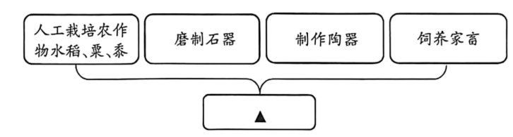

📍 早期国家和文明的起源
时间背景：5000多年前
物质基础：原始社会的农业、畜牧业有了较大发展，人口显著增长
文明标志：
- 城市：人口向区域中心集中，城墙、城壕、大型水利设施出现
- 阶级：社会分化加剧，一部分人脱离生产劳动专门从事管理
- 国家：掌握政治、经济、军事和祭祀权力的王出现，形成早期国家
📍 良渚古城（距今约5300-4300年）
位置：浙江余杭，长江下游
规模：宫殿区、内城（300万㎡）、外城（630万㎡），规模在当时世界首屈一指
水利系统：人工水坝和自然山体组成，同时期世界最大
农业：约20万千克炭化稻谷，反映强大经济组织能力
阶级分化：贵族墓地陪葬精美玉器（玉琮、玉璧、玉钺），城外普通墓地随葬品稀少
地位：证明距今约5000年长江下游已出现早期国家
📍 陶寺古城（距今约4300-4000年）
位置：山西襄汾，黄河中游
规模：280万㎡，有围墙环绕的宫城
阶级分化：大型墓葬随葬陶鼓、石磬、玉钺等；小型墓无随葬品；贵族墓地有人殉
文明成就：小件青铜器、带书写符号的陶壶、观象台遗迹
地位：表明黄河中游已出现早期国家，可能是尧的都城
📍 多元一体的中华文明格局
多元：距今5000年左右，黄河、长江、西辽河流域都发展出各具特色的早期文明
一体：各地文明不断交流融合，共同构成早期中华文明主体
中原引领：距今4000多年，中原地区吸收各地文明要素后迅速崛起，形成文明新格局
📍 远古的传说
华夏族形成：五六千年前，炎帝、黄帝、蚩尤等部落活动于黄河流域。阪泉之战后炎黄结盟，涿鹿之战后蚩尤战败，炎黄部落联盟演化为华夏族。炎帝和黄帝被尊为中华民族人文初祖。
禅让制：尧、舜、禹依次成为首领，传位给贤德之人。大禹治水有功，采用疏导方法，"三过家门而不入"。
🔍 重点1：私有制、阶级和国家的产生是人类进入文明社会的重要标志
深度评析：涉及历史唯物主义基本原理。教材通过良渚和陶寺的考古发现，实证了国家是阶级矛盾不可调和的产物。
广度评析：从三个层面理解：城市（物质层面）、阶级（社会层面）、国家（政治层面）。三者相互关联：经济发展→剩余产品→私有制→阶级分化→国家形成。
高度评析：教材使用"重要标志"而非唯一标志，体现学术严谨性，结合了中国的考古实际。
🔍 重点2：良渚古城和陶寺古城的考古发现
深度评析：两大核心案例实证了5000多年前中华大地已出现早期国家。
良渚独特价值：规模世界首屈一指、水利系统世界最大、20万千克炭化稻谷、精美玉器反映发达手工业。
陶寺独特价值：小件青铜器（青铜时代前夜）、书写符号（文字萌芽）、观象台（天文历法）、可能是尧都。
高度评析：打破了"中华文明五千年只是传说"的质疑，以考古实证证明中华文明5000多年历史，是文化自信的重要源泉。
🔍 难点1：理解中华文明起源的"多元一体"特征
深度评析："多元一体"是中华文明起源的核心特征。距今5000年左右，黄河、长江、西辽河流域独立发展出各具特色的文明；距今4000多年，中原地区吸收各地文明要素后崛起，形成以中原为引领的文明新格局。
突破方法：通过地图展示各遗址分布，让学生直观理解"多元"和"一体"的形成过程。
🔍 难点2：如何认识远古传说与考古发现的关系
深度评析：教材将考古发现（良渚、陶寺）与远古传说（炎黄、尧舜禹）结合，体现了"二重证据法"。
传说价值：远古传说虽非严格意义上的历史记载，但蕴含着一定的历史信息，反映了先民的社会生活和精神世界。
考古价值：考古发现是实证历史的第一手材料，可以与传说相互印证（如陶寺可能是尧都）。
教学启示：应引导学生认识传说与史实的区别，理解传说对认识中华文明起源的辅助意义。
💭 【想一想】从良渚古城和陶寺古城的考古发现，谈谈为什么说当时已进入文明社会。
解答：
良渚古城的证据：
- 城市规模巨大（内城+外城近1000万㎡），有宫殿区、水利系统，反映强大的组织能力
- 约20万千克炭化稻谷，反映较高的经济发展水平和统治者较强的调动、组织能力
- 贵族墓地陪葬精美玉器，普通墓地随葬品稀少，社会阶级分化相当明显
- 玉器上的"神徽"反映统一的崇拜对象，可能有统一的精神信仰
陶寺古城的证据：
- 有宫城、高等级建筑，阶级分化严重（大型墓葬随葬丰富，小型墓一无所有）
- 出现人殉现象，表明统治阶级对被统治阶级的压迫
- 出土小件青铜器和带书写符号的陶壶，反映较高文明水平
- 观象台遗迹反映天文历法的发展
结论：两座城市都具备城市的规模、阶级的分化和国家的权力机构，符合"私有制、阶级和国家的产生是人类进入文明社会的重要标志"这一标准。
📖 【材料研读】华夏民族的形成特点
材料：
"华夏民族，非一族所成。太古以来，诸族错居，接触交通，各去小异而大同，渐化合以成一族之形，后世所谓诸夏是也。"
——梁启超《太古及三代载记》
问题：从材料中可以看出华夏族的形成有什么特点？
解答：
- 多族融合："非一族所成"，华夏族不是由单一族群形成，而是多个族群融合的结果
- 长期过程："太古以来"，从远古时期就开始了融合过程
- 交流互动："诸族错居，接触交通"，各族群交错居住，相互交流往来
- 求同存异："各去小异而大同"，各族群保留小的差异，追求大的共同认同
- 渐化合："渐化合以成一族之形"，融合是一个渐进的过程，最终形成华夏族
与教材的联系：材料印证了教材中"炎黄部落联盟逐渐演化为后来的华夏族"的叙述，也说明中华文明"多元一体"特征在远古时期就已萌芽。
📖 【学史崇德】大禹治水
解答与理解：
治水方法：禹采用疏导的方法，开凿河渠引洪水入海（与其父鲧的封堵方法不同）
精神品质：
- 公而忘私："三过家门而不入"，全身心投入治水事业
- 勇于创新：吸取父亲失败的教训，改用疏导方法
- 坚持不懈：经过10多年努力，终于消除水患
- 为民奉献：以解除民众苦难为己任
历史意义：大禹治水成功，得到民众爱戴，被尊为"大禹"，后来成为部落联盟首领。大禹治水的精神成为中华民族精神的重要组成部分，体现了"舍小家为大家"的奉献精神。
📝 【课后活动】1. 考古发现与远古传说对认识中华文明起源的意义
解答：
考古发现的意义：
- 提供第一手实物证据，实证中华文明5000多年的历史
- 良渚、陶寺等遗址发现，证明早期国家的存在
- 揭示文明起源的具体过程（城市、阶级、国家的形成）
- 证实中华文明"多元一体"的发展格局
远古传说的意义：
- 蕴含一定的历史信息，反映先民的社会生活
- 传承民族记忆，增强民族认同感
- 炎帝、黄帝被尊为人文初祖，"炎黄子孙"成为民族认同符号
- 大禹治水等传说反映先民改造自然的精神
两者结合：考古发现与远古传说相互印证，共同构建中华文明起源的历史图景。考古为传说提供实证，传说为考古提供线索。
📝 【课后活动】2. 黄帝陵导游词
解答示例：
黄帝陵导游词
各位游客，欢迎来到黄帝陵！黄帝陵位于陕西黄陵县城北，是中华民族人文初祖轩辕黄帝的陵寝。
人物经历：黄帝是五六千年前黄河流域部落联盟的首领。他联合炎帝，在阪泉之战后结成炎黄部落联盟；又在涿鹿之战中击败蚩尤，被推举为联盟首领。黄帝部落联盟逐渐演化为后来的华夏族。
主要贡献：
- 统一部落，奠定华夏族基础
- 教民养蚕缫丝，发展纺织业
- 发明舟车，便利交通
- 创造文字（传说仓颉造字）
- 推算历法，指导农业生产
历史地位：黄帝和炎帝被后人尊崇为中华民族的人文初祖。海内外华人自称"炎黄子孙"，每年清明时节，大量炎黄子孙来此祭拜，表达对先祖的敬仰和对民族认同的传承。
📚 【知识拓展】中华文明探源工程
解答与理解：
研究基础：以考古学、历史学为基础，广泛采用地质学、地理学、物理学、化学、生物学等自然科学方法进行综合研究
核心成果：
- 提出了判断进入文明社会标准的"中国方案"
- 揭示了中华文明起源、形成与早期发展的历史进程
- 将"中华文明五千年"从传说论证为可信的历史
重要意义：为增强中华民族文化自信提供了强大的精神动力，证明了中华文明具有悠久的历史和深厚的根基。
✅ 一、判断题（对的打"√"，错的打"×"）
1. 私有制、阶级和国家的产生是人类进入文明社会的重要标志。（ ）
2. 良渚古城位于黄河中游地区，距今约4300-4000年。（ ）
3. 炎帝和黄帝被后人尊崇为中华民族的人文初祖，海内外华人以"炎黄子孙"自称。（ ）
4. 尧、舜、禹时期实行世袭制，首领之位父子相传。（ ）
5. 中华文明的起源和初步发展具有多元一体的特征。（ ）
✅ 二、选择题（单选）
1. 中华文明探源工程以考古学、历史学为基础，广泛采用地质学、地理学、物理学、化学、生物学等自然科学的方法进行综合研究，提出了判断进入文明社会标准的中国方案，在探源工程中发现了距今5000年左右黄河、长江、西辽河流域都发展出了各具特色的早期文明。下列选项中哪个是人类进入文明社会的重要标志（ ）
2. "尧得民心，为人简朴，颁布农耕时令；舜守孝道，善于用人，使百业兴旺；禹治水患，且公而忘私，三过家门而不入"。从他们的事迹中可以看出，"禅让制"的核心标准是（ ）
3. 绘制思维导图是学习历史的有效方法。以下思维导图中，①处应填（ ）

4. 《越绝书》是古代有关吴越地区历史的重要典籍，记载了许多上古传说，如神农之时以石为兵……黄帝之时以玉为兵……禹穴之时以钢为兵。这些记载如今已经从考古发现得到了不同程度的证明。据此可以判断（ ）
5. 良渚文化遗址中的玉琮，多出土于规模较大、规格较高的墓葬。研究表明，良渚玉器常与祭祀天地、沟通神灵的活动相关。据此可知，良渚文化的玉琮是（ ）
✅ 三、材料分析题
材料一：
"良渚古城遗址位于浙江余杭，距今约5300-4300年。古城由宫殿区、内城和外城组成。内城面积约300万平方米，外城面积约630万平方米，规模在当时世界上首屈一指。城的北部和西北部有一个复杂的水利系统，由人工修建的水坝和自然山体组成，是同时期世界上规模最大的水利工程。内城中部，有一个人工堆筑的高台，上面建有大型广场和多组高等级建筑，附近还发现了约20万千克炭化稻谷。"
材料二：
"陶寺古城遗址位于山西襄汾，距今约4300-4000年。陶寺古城面积达280万平方米，城内有围墙环绕的宫城。城内有多处高等级建筑基址，以及陶质的建筑材料。城内有多处墓地，大型墓葬集中分布，墓中往往随葬陶鼓、石磬、玉钺、陶盘等器物，表明墓主人的尊贵身份。很多小型墓没有任何随葬品，城内在有的贵族墓地还发现用人殉葬的现象。"
材料三：
"良渚古城、陶寺古城等考古发现，表明中华文明的起源和初步发展具有多元一体的特征。距今5000年左右，黄河、长江、西辽河流域都发展出了各具特色的早期文明，它们彼此之间不断地交流和融合，共同构成了早期中华文明的主体。"
请回答：
1. 根据材料一，概括良渚古城的主要特点。
2. 根据材料二，说明陶寺古城反映了怎样的社会状况。
3. 综合三则材料，谈谈中华文明起源具有什么特征，并举例说明。
4. 结合所学知识，谈谈良渚古城和陶寺古城的考古发现对认识中华文明起源有什么重要意义。